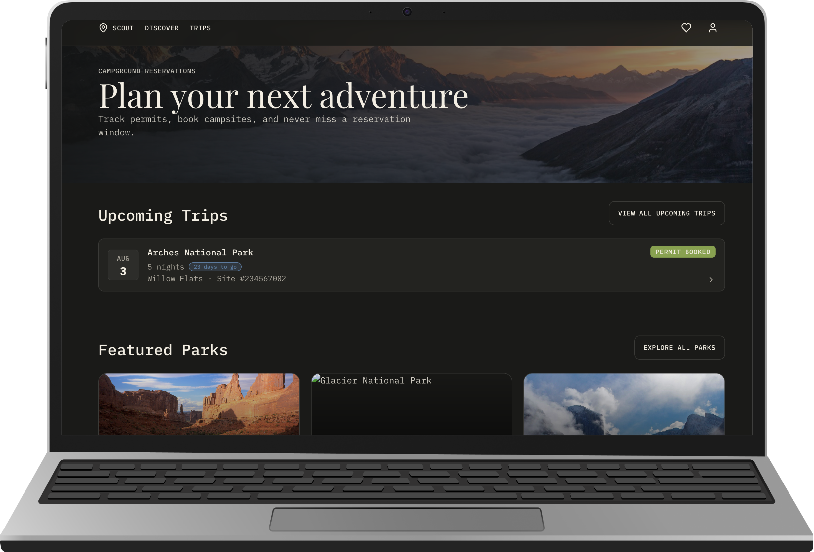

Scout — Camping Permit Booking and Reminders
A web app that turns the deadline-driven national park permit process into a guided flow with proactive reminders — and the project where I ran a full AI-built development workflow end to end: I planned and directed, AI built, and I tested the result like a real user would.

Overview
Scout is a web app that helps campers reserve hard-to-get national park campsites, turning a deadline-driven permit process into a guided flow with proactive reminders. I used this project to run a full AI-built development workflow end to end: I planned and directed, AI built, and I tested the result like a real user would.
Problem
Campers trying to book a site at a competitive national park need a way to know exactly when a specific park's permit window opens and to act on it before it closes, because windows open on fixed dates with scarce availability, and existing tools like Rec.gov and scattered park sites assume they already know when and where to look.
Approach
Before writing a single prompt, I built the planning layer myself:
- A moodboard, sketches, and inspiration references
- A full site structure and navigation map
- Three scripted userflows for the core jobs: discovering parks, setting a permit reminder, and managing a trip itinerary


Example, the reminder flow: a user sees an upcoming permit window, sets their notification timing and method, and the system syncs it to their calendar and confirms it saved. Writing flows at this level of detail gave the build a precise target instead of a vague brief.
Where AI built, and where I directed it
- I initialized the project using the course's prompt templates.
- Every prompt after that was mine: page content, a design system generated from my moodboard, and ongoing changes as the build progressed.
- Cursor, connected to Supabase, GitHub, and Netlify, did the actual building: generating code from my prompts and iterating each time I asked for a change.
- My role was planning, direction, and review. AI wrote the code.


The design system
I built the initial token set (color, type, spacing) from my moodboard. Once it rendered on a live screen, it did not fully match what I'd pictured, so I prompted a second pass. AI executed the refinement; my job was catching what wasn't working and directing the fix.

Catching a real bug
Once the core flows were built, I manually tested my own userflows against the live app. Some campsite pages linked to the same Rec.gov listing, others hit a 404. I inspected the code to find where the wrong campsite or park ID was being passed into the link, then prompted a fix that mapped each campsite to the correct listing. It works now, though the underlying data is still limited.
This is the core skill the project built: plan, prompt, review, fix. AI generated the app fast, but it could not judge on its own whether a flow made sense or a link was broken. That still took a real user testing it, which was me.
Solution
Scout shipped two connected experiences:
Permit booking flow
Filter parks by activity, region, and season, drill into a park's seasonal guide and campsite list, pick dates, confirm reservation details and fees, then continue to Rec.gov to pay. Anything not ready to book saves to a Wishlist.
Reminder system
Set a reminder on any park or campsite, choose timing and notification method, and sync it to a calendar through Google Calendar or a downloadable event file that works on iOS, Android, and desktop.
Supabase Auth and profiles.
Reflection
- What I'd do differently: test each userflow against the live app as I built, instead of catching something like the broken Rec.gov links late.
- What I learned: AI builds fast, but it cannot judge whether the result works the way a real user would experience it. That is still my job. Planning artifacts, the moodboard, userflows, and page structure, are what make AI output usable instead of generic. Testing the result is what makes it trustworthy. Building with AI is its own skill, separate from designing or planning, and neither replaces the other.
Building AI Web Applications
A semester of small, AI-assisted web apps — each one a focused experiment in building real, working software with AI as a build partner.